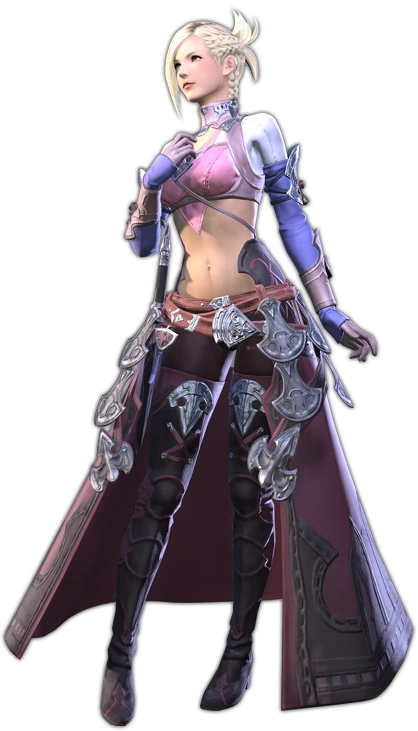
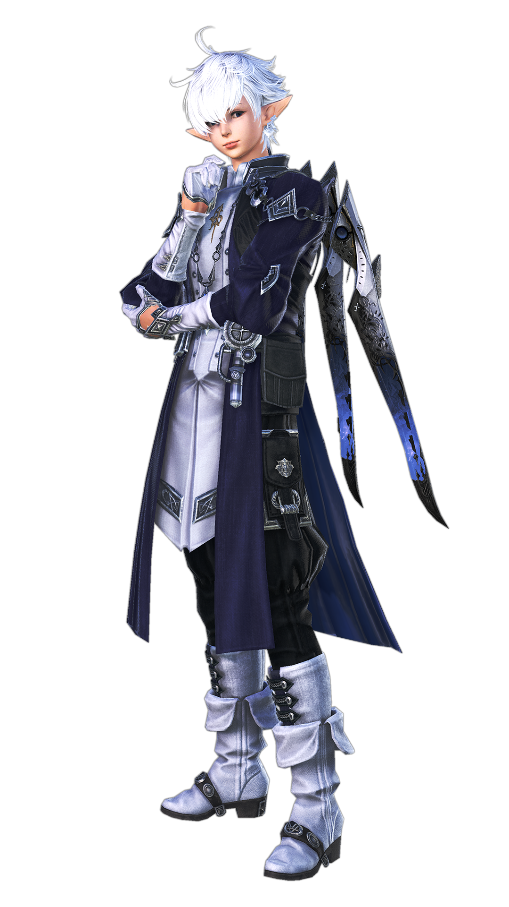
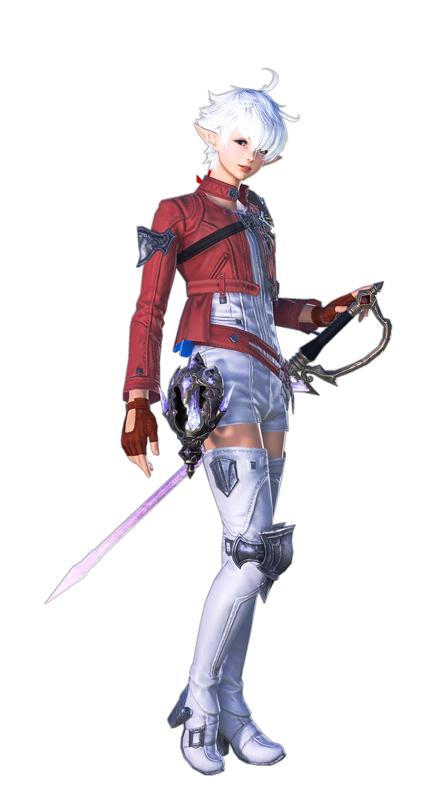

Quick Navigation
Scions of the Seventh Dawn
Return to Top
Minfilia Warde
"The path we now embark upon is perilous, but I pray you will walk with us to the end. For those we have lost. For those we can yet save."
Minfilia Warde is the leader of the Scions of the Seventh Dawn, known for her charismatic leadership and deep commitment to the protection of Eorzea. She acts as a guiding light for the Scions, coordinating their efforts against the realm's many threats, including the Garlean Empire and the primals. Her connection to the Echo, a mysterious power that allows her to see into the past, makes her an invaluable asset in their endeavors.
Tataru Taru
"Deep in the desert of my heart,♪ A lonely flower blooms...♪ Yearning for the heavens above♪ To quench my thirst for you.♪ Trolololololololo♪"
Tataru Taru is the heartwarming and diligent receptionist and administrative assistant for the Scions of the Seventh Dawn. With her cheerful demeanor and knack for accounting, she ensures the smooth operation of the Scions' day-to-day activities, providing logistical support that keeps the organization running. Despite her non-combatant role, Tataru's spirit and dedication make her an indispensable member of the team.
Y'shtola Rhul
"I will join the fray when I have finished my tea."
Y'shtola Rhul is a calm and intelligent Miqo'te sorceress of the Scions of the Seventh Dawn, specializing in the magical arts. Her wisdom and sharp wit are matched by her proficiency in conjury and aetherial manipulation, making her a formidable ally in battle. Y'shtola's insights into the nature of aether make her an essential resource in understanding and countering the threats to Eorzea.
Thancred Waters
"You know nothing about me. I have fought tooth and nail for the people I hold dear— done everything in my power to save them... and I have failed. Learn to live with it. I have."
Thancred Waters is a suave and skilled rogue member of the Scions, often working undercover to gather intelligence on their foes. With a quick wit and a quicker blade, he is deeply loyal to the Scions' cause, though his charming exterior masks the scars of his past. Thancred's expertise in espionage and combat ensures that he plays a crucial role in the Scions' operations.
Papalymo Totolymo
"It is precisely when things appear to be proceeding according to plan that we must needs steel ourselves for impending danger."

Papalymo Totolymo, a wise and meticulous Lalafellin spellcaster, is Yda's steadfast companion and a member of the Scions. His mastery of thaumaturgy and protective magics complement his analytical mind, making him a critical thinker in the group. Papalymo's cautious nature and strategic foresight are invaluable as the Scions navigate the complex political and environmental landscape of Eorzea.
Yda/Lyse Hext
"So, this is it. Whatever I choose to do from now on, I do as Lyse. ...And I choose to continue my family's fight. I want Ala Mhigo to be the country that Yda and my father always wanted it to be!"
Yda Hext is a spirited and optimistic member of the Scions, recognizable by her mask and energetic personality. Her skills in hand-to-hand combat, combined with an unwavering sense of justice, drive her to fight tirelessly for the freedom of Eorzea. Despite her seemingly carefree attitude, Yda harbors a deep dedication to her allies and the cause of the Scions.
Urianger Augurelt
"For the world is a tapestry of fates, interwoven and inseparable, and we who strive to better it cannot choose but make difficult decisions. For naught of worth was ever achieved without sacrifice. And thus must man ever struggle to weigh life against loss."

Urianger Augurelt is a learned Archon and scholar, known for his eloquent speech and deep knowledge of ancient lore and prophecy. His expertise in arcane arts and the history of Eorzea makes him a key strategist for the Scions. Urianger's studies of the Echo and the Ascians, mysterious beings with dark intentions, are vital to understanding the greater threats to the realm.
Alphinaud Leveilleur
"If this journey has taught me anything, it is the importance─and difficulty─of holding to one's convictions in the face of failure...of striving always to replace one's ignorance with knowledge."
Alphinaud Leveilleur is a young, ambitious Elezen with a sharp intellect and a talent for diplomacy and strategy. As the grandson of Louisoix Leveilleur, the famed Archon who sacrificed himself to save Eorzea from the Calamity, Alphinaud seeks to carve out his own legacy. He is determined to make a meaningful difference in the realm through his actions and leadership, founding the Scions of the Seventh Dawn alongside his sister to fight against the myriad threats facing Eorzea.
Alisaie Leveilleur
"Though no weapons are drawn, a negotiation is no less a battle, and the stakes can be every bit as high. One misplaced word and people could die. It takes someone with a cool head, and I'll be the first to admit that's not me."
Alisaie Leveilleur is Alphinaud's twin sister, sharing her brother's intelligence but with a more direct and action-oriented approach. Unlike her brother, she is more skeptical of politics and organizations, preferring to tackle problems head-on. Independent and strong-willed, Alisaie is deeply committed to protecting Eorzea from its enemies, using her skills as a Red Mage to fight for what she believes in.
City State Leaders
Return to Top
Kan-E-Senna
"And we for our part are glad indeed to welcome friends both old and new..."

Kan-E-Senna is the Elder Seedseer of Gridania and the head of the Seedseer Council, serving as one of the key leaders of the Eorzean Alliance. A powerful white mage, she is deeply connected to the elementals and the Twelveswood, advocating for peace and balance between the people of Gridania and the forest. Kan-E-Senna is known for her wisdom, compassion, and unwavering dedication to the safety and prosperity of her city-state and its inhabitants.
Nanamo Ul Namo
"While it is true man succumbs all too often to anger and avarice, he may yet overcome his basest instincts through forming of bonds with others."
Nanamo Ul Namo is the beloved Sultana of Ul'dah, ruling the bustling desert city-state with a gentle yet firm hand. Despite her young age and small stature, she possesses a keen mind for politics and a big heart for her people, constantly striving for reforms that would better their lives. Nanamo's reign is challenged by the intricate web of Ul'dah's oligarchy and the Syndicate, but she remains a beacon of hope and change for many of her citizens.
Merlwyb Bloefhiswyn
"What we have sown in blood, we have reaped in suffering, and it cannot go on."
Merlwyb Bloefhiswyn is the Admiral of Limsa Lominsa and the head of the city-state's ruling body, the Maelstrom. A formidable marauder and tactician, she is fiercely dedicated to the security of Limsa Lominsa, navigating the complex politics of the city and its pirate factions with a steady hand. Merlwyb's leadership is defined by her strength, courage, and her commitment to maintaining the freedom and power of her maritime nation.